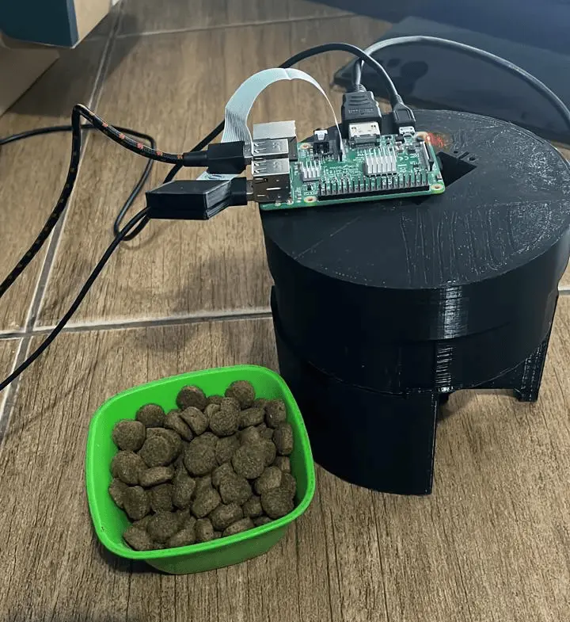

Automatic Pet Feeder
The main objective of this project is to develop an automated system capable of detecting whether a pet's food bowl is empty or full and, based on this detection, activate an automatic feeder.

What is the objective?
An automatic feeder that uses AI to detect when the bowl is empty and dispenses food. Ideal for owners who spend time away from home.
Components
- Raspberry Pi 3 B
- Futaba S3003 servo
- CSI Camera
- 3D printed structure
IA Model
Computer vision with MobileNetV2 (transfer learning) in Keras/TensorFlow, full/empty binary classification, trained with own dataset + data augmentation.